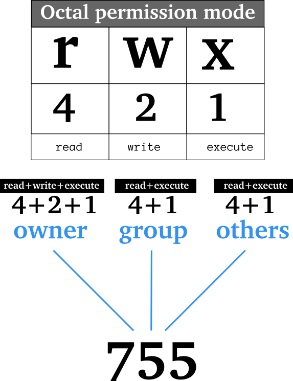

Die Rechteverwaltung für Dateien
Basierend auf der UNIX-Rechteverwaltung bringt LINUX eine einfache aber sehr effektive Verwaltung für den Umgang mit Dateien mit. Diese LINUX-Rechteverwaltung regelt, wer auf dem System bestimmte Dateien lesen, schreiben oder ausführen darf und zwar getrennt für Eigentümer, Gruppen und Gäste. Nur der Administrator root darf als Superuser alles.
Die Zugriffsrechte unter LINUX
Für den Umgang mit Dateien und Verzeichnissen kennt LINUX drei "Grundrechte":
- lesen: r (read)
- schreiben: w (write), beinhaltet auch das Löschen
- ausführen: x (execute)
Diese Zugriffsrechte, auch Dateirechte genannt, lassen sich für jede Datei und jedes Verzeichnis setzen und vom Eigentümer auch ändern.
Neben den grundlegenden Zugriffsrechten gibt es für besondere Situationen auch einige Sonderrechte für den Dateizugriff.
Benutzerklassen unter LINUX
Linux Dateisysteme kennen drei Benutzerklassen für Dateien, die unterschiedliche Besitzerrechte haben können:
- Eigentümer: u (user)
- Gruppe: g (group)
- alle Anderen: o (others)
Derjenige, der eine neue Datei oder ein neues Verzeichnis erstellt ist zunächst einmal auch der Eigentümer der Datei. Die Gruppe, der die neue Datei gehört ist zunächst die Standardgruppe des Eigentümers.
Die Notation der Zugriffsrechte

Unterschiedliche Darstellungen der LINUX Dateirechte
Es gibt zwei Arten, wie die Datei-Zugriffsrechte dargestellt werden.
Die Oktalnotation
In der Oktalnotation werden die Zugriffsrechte durch drei Ziffern dargestellt. Die Reihenfolge der Ziffern definiert die Zugriffsrechte für:
- 1. Ziffer: Eigentümer
- 2. Ziffer: Gruppe
- 3. Ziffer: Andere
Jede dieser Ziffern ergibt sich aus der Summe der Wertigkeiten der Zugriffsrechte:
- ausführen: Wertigkeit 1
- schreiben: Wertigkeit 2
- lesen: Wertigkeit 4
Aus der Ziffer 6 (6=4+2) ergeben sich also die Zugriffsrechte lesen (4) und schreiben (2).
Sind bei einer Datei auch noch Sonderrechte vorhanden, so wird die dreiziffrige Darstellung durch eine führende 4. Ziffer ergänzt. Diese ergibt sich aus der Summe der Wertigkeiten der Sonderrechte:
- Sticky Bit: Wertigkeit 1
- Set-GID Bit: Wertigkeit 2
- Set-UID Biet: Wertigkeit 4
Die symbolische Notation
Bei der symbolischen Notation werden die Zugriffsrechte durch eine Zeichenkette mit 9 Zeichen dargestellt.
Die ersten drei Zeichen stehen für die Rechte des Eigentümers, die mittleren drei Zeichen für die Rechte der Gruppe und die letzten drei Zeichen für die Gastrechte.
Wenn an einer Stelle ein Bindestrich - steht, ist kein Recht gesetzt.
- Die Positionen 1,4,7 geben die Leserechte (r) an
- Die Positionen 2,5,8 geben die Schreibrechte (w) an
- Die Positionen 3,6,9 geben die Ausführrechte (x) an
Sind außerdem Sonderrechte gesetzt, so erkennt man dies an den Positionen 3,6 und 9:
- Position 3: SUID Bit gesetzt (s)
- Position 6: GUID Bit gesetzt (s)
- Position 9: Sticky Bit gesetzt (t)